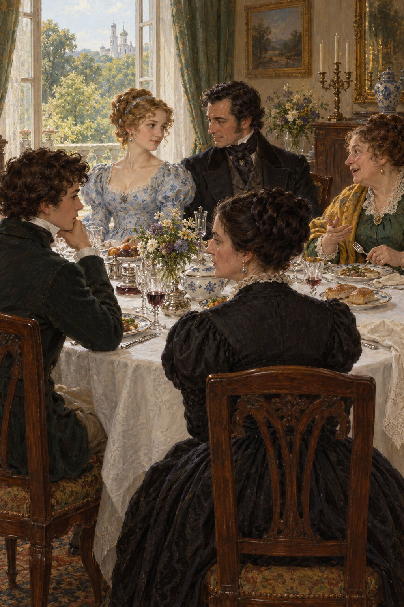

Ivan Turgenev · First Love
제6장
그날 저녁과 다음 날 아침을
나는 멍하고 우울하게 보냈다.
공부를 해 보겠다고
카이다노프의 교과서를 펼쳤다.
하지만 유명한 역사책의
커다란 글씨와 페이지가
눈앞을 지나가기만 했다.
‘율리우스 카이사르는
전투에서 뛰어난 용맹을 보였다.’
같은 구절을 열 번이나 읽었지만
뜻이 머리에 들어오지 않았다.
나는 책을 덮었다.
점심 전에
다시 머리에 기름을 바르고
외출용 긴 웃옷과 넥타이를 맸다.
“그 차림은 왜 했니?”
어머니가 물었다.
“아직 대학생도 아닌데.
시험에 붙을지도 모르잖아.
짧은 웃옷도
지은 지 얼마 안 됐는데
벌써 안 입을 셈이야?”
“손님이 오시잖아요.”
나는 거의 절망한 목소리로
속삭였다.
“별소리를 다 하는구나.
그분들이 무슨 손님이라고!”
결국 어머니 말을 따라야 했다.
긴 웃옷을 벗고
짧은 웃옷을 입었다.
그래도 넥타이는
풀지 않았다.
공작부인과 딸은
점심 식사 삼십 분 전에 왔다.
공작부인은
전에 본 초록색 옷 위에
노란 숄을 둘렀다.
옛날식 모자에는
불꽃 같은 색의 리본이 달렸다.
그녀는 자리에 앉자마자
빚 문서 이야기를 꺼냈다.
한숨을 쉬고
가난을 늘어놓으며
끈질기게 도움을 청했다.
하지만 체면을 차리지는 않았다.
코담배를 요란하게 들이마시고
의자에서 몸을 돌리고 꿈틀거렸다.
자신이 공작부인이라는 사실은
생각조차 하지 않는 듯했다.
반면 지나이다는
진짜 공녀답게
엄격하다 못해
거의 도도하게 행동했다.
얼굴은 차갑고 고요했고
표정은 근엄했다.
나는 그녀를 알아볼 수 없었다.
눈길도, 웃음도
어제와는 달랐다.
하지만 그 모습도
아름답게 느껴졌다.
그녀는
옅은 푸른 무늬가 있는
얇고 가벼운 옷을 입었다.
긴 곱슬머리는
영국식으로 양쪽 뺨을 따라
흘러내렸다.
그 머리 모양이
차가운 표정과 잘 어울렸다.
아버지는 식사 내내
지나이다 옆에 앉았다.
언제나 그렇듯
차분하고 세련된 예의로
그녀에게 말을 건넸다.
아버지는 이따금
지나이다를 바라보았다.
그녀도 이따금
아버지를 바라보았다.
그 눈길은 묘했다.
거의 적대적인 것 같았다.

두 사람은 프랑스어로 이야기했다.
지나이다의 또렷한 발음에
내가 놀랐던 것이 기억난다.
공작부인은 식탁에서도
거리낌이 없었다.
많이 먹고
음식도 칭찬했다.
어머니는 공작부인을
버거워하는 게 분명했다.
어딘지 서글픈 듯하면서도
업신여기는 말투로 답했다.
아버지는 가끔
눈썹을 살짝 찌푸렸다.
어머니는 지나이다도
마음에 들지 않았다.
“어찌나 거만한지.”
이튿날 어머니가 말했다.
“여자 점원 같은 차림을 하고
무슨 거만을 떤담.”
“당신은 여자 점원들을
본 적이 없나 보군.”
아버지가 말했다.
“그래서 다행이지요.”
“물론 다행이지.
그런데 본 적도 없으면서
어떻게 비교하지?”
지나이다는
내게 전혀 관심을 주지 않았다.
식사가 끝나고 얼마 지나지 않아
공작부인이 일어섰다.
“마리야 니콜라예브나,
표트르 바실리예비치,
두 분의 도움을
믿고 있겠습니다.”
그녀가 노래하듯 말했다.
“어쩌겠어요.
좋던 시절은 지나갔지요.
저도 공작부인이긴 하지만….”
그녀는
기분 나쁜 웃음을 지었다.
“먹을 것도 없는데
작위가 무슨 소용이겠어요.”
아버지는
공손히 고개를 숙이고
현관문까지 배웅했다.
나도 거기 서 있었다.
짧은 웃옷을 입고
마치 사형 선고를 받은 사람처럼
바닥만 내려다보았다.
지나이다가 나를 대하는 태도는
나를 완전히 짓눌렀다.
그런데 그녀가
내 곁을 지나며
놀라운 말을 속삭였다.
빠른 말투였지만
눈길은 어제처럼 다정했다.
“여덟 시에 우리 집에 오세요.
들었지요?
꼭 오셔야 해요.”
나는 두 팔을
벌릴 수밖에 없었다.
하지만 그녀는 이미
흰 스카프를 머리에 걸치고
멀어지고 있었다.